MotorWithCurrentControlSynchronous machine with current controller and measurement noise |
Diagram
{kind=link}
Information
This information is part of the Modelica Standard Library maintained by the Modelica Association.
A synchronous machine with permanent magnets, current controller and measurement noise of ±0.01 rad accelerates a quadratic speed dependent load from standstill. The rms values of d- and q-current in rotor fixed coordinate system are converted to three-phase currents, and fed to the machine. The result shows that the torque is influenced by the q-current, whereas the stator voltage is influenced by the d-current.
Default machine parameters of model SM_PermanentMagnet are used.
This motor is used in the Examples.Noise.ActuatorWithNoise actuator example
Parameters (8)
| VNominal |
Value: 100 Type: Voltage (V) Description: Nominal RMS voltage per phase |
|---|---|
| fNominal |
Value: 50 Type: Frequency (Hz) Description: Nominal frequency |
| f |
Value: 50 Type: Frequency (Hz) Description: Actual frequency |
| tRamp |
Value: 1 Type: Time (s) Description: Frequency ramp |
| TLoad |
Value: 181.4 Type: Torque (N·m) Description: Nominal load torque |
| tStep |
Value: 1.2 Type: Time (s) Description: Time of load torque step |
| JLoad |
Value: 0.29 Type: Inertia (kg·m²) Description: Load's moment of inertia |
| smpmData |
Value: Type: SM_PermanentMagnetData Description: Data for motor |
Outputs (2)
| phi_motor |
Default Value: angleSensor.phi Type: Real (rad) Description: Rotational position |
|---|---|
| w |
Default Value: speedSensor.w Type: Real (rad/s) Description: Rotational speed |
Connectors (3)
| iq_rms1 |
Type: RealInput |
|
|---|---|---|
| flange |
Type: Flange_b Description: Right flange of shaft |
|
| phi |
Type: RealOutput Description: Absolute angle of flange as output signal |
Components (19)
| 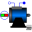 | smpm |
Type: SM_PermanentMagnet |
|---|---|---|
| 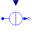 | signalCurrent |
Type: SignalCurrent |
| 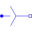 | star |
Type: Star |
| ground |
Type: Ground |
|
| dqToThreePhase |
Type: DQToThreePhase |
|
| starM |
Type: Star |
|
| groundM |
Type: Ground |
|
| 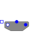 | terminalBox |
Type: TerminalBox |
| 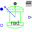 | rotorDisplacementAngle |
Type: RotorDisplacementAngle |
| 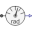 | angleSensor |
Type: AngleSensor |
| 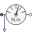 | torqueSensor |
Type: TorqueSensor |
| 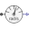 | speedSensor |
Type: SpeedSensor |
| 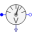 | voltageQuasiRMSSensor |
Type: VoltageQuasiRMSSensor |
| 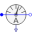 | currentQuasiRMSSensor |
Type: CurrentQuasiRMSSensor |
| inertiaLoad |
Type: Inertia |
|
| smpmData |
Type: SM_PermanentMagnetData Description: Data for motor |
|
| 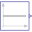 | id |
Type: Constant |
| addNoise |
Type: Add |
|
| 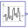 | uniformNoise |
Type: UniformNoise |
Used in Examples (1)
|
Modelica.Blocks.Examples.Noise Demonstrates how to model measurement noise in an actuator |